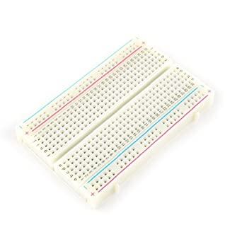
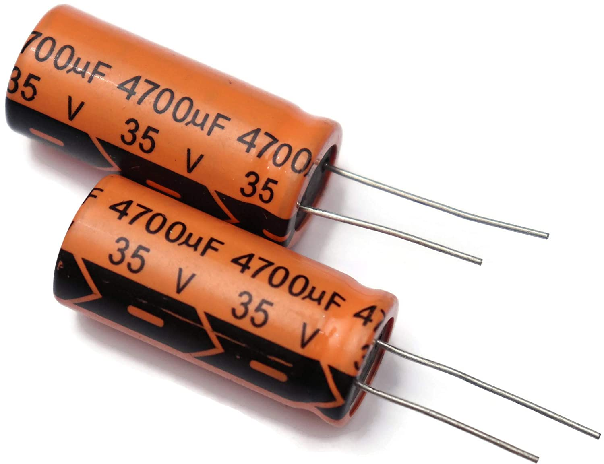
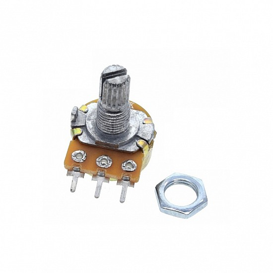
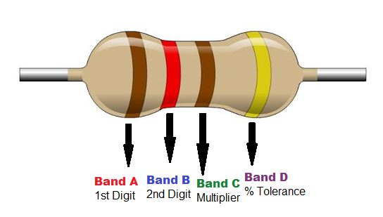

-

1.Arduino Nano comes with a crystal oscillator of frequency 16 MHz. It is used to produce a clock of precise frequency using constant voltage.
2. Arduino UNO is a low-cost, flexible, and easy-to-use programmable open-source microcontroller board that can be integrated into a variety of electronic projects.
3. Arduino Mega 2560 can be programmed using Arduino IDE software which is an official Arduino software used to program all Arduino boards.
Breadboard
- 
A breadboard, solderless breadboard, or protoboard is a construction base used to build semi-permanent prototypes of electronic circuits. Unlike a perfboard or stripboard, breadboards do not require soldering or destruction of tracks and are hence reusable.
Capacitor
- 
A capacitor is a two-terminal electrical device that can store energy in the form of an electric charge. It consists of two electrical conductors that are separated by a distance. The space between the conductors may be filled by vacuum or with an insulating material known as a dielectric.
Potentiometer
- 
A potentiometer is a three-terminal resistor with a sliding or rotating contact that forms an adjustable voltage divider. If only two terminals are used, one end and the wiper, it acts as a variable resistor or rheostat.
Push-Button-Switch
-

A push button switch is a mechanical device used to control an electrical circuit in which the operator manually presses a button to actuate an internal switching mechanism. They come in a variety of shapes, sizes, and configurations, depending on the design requirements.
Resistor
- 
A resistor is an electrical component that limits or regulates the flow of electrical current in an electronic circuit. Resistors can also be used to provide a specific voltage for an active device such as a transistor.
Robot
-

A robot is a machine—especially one programmable by a computer—capable of carrying out a complex series of actions automatically. A robot can be guided by an external control device, or the control may be embedded within.